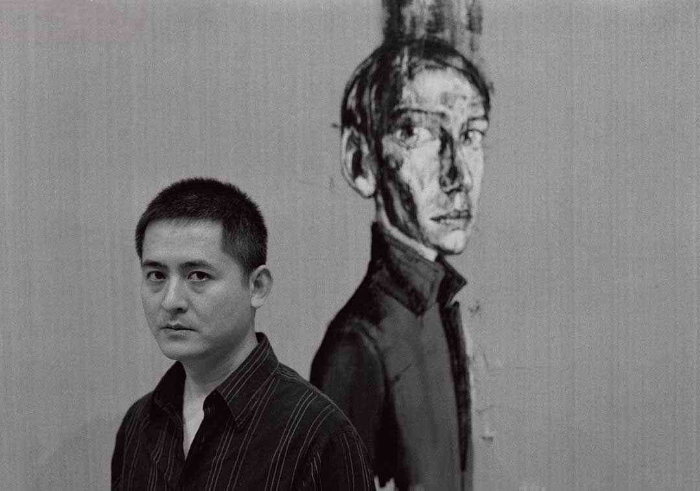
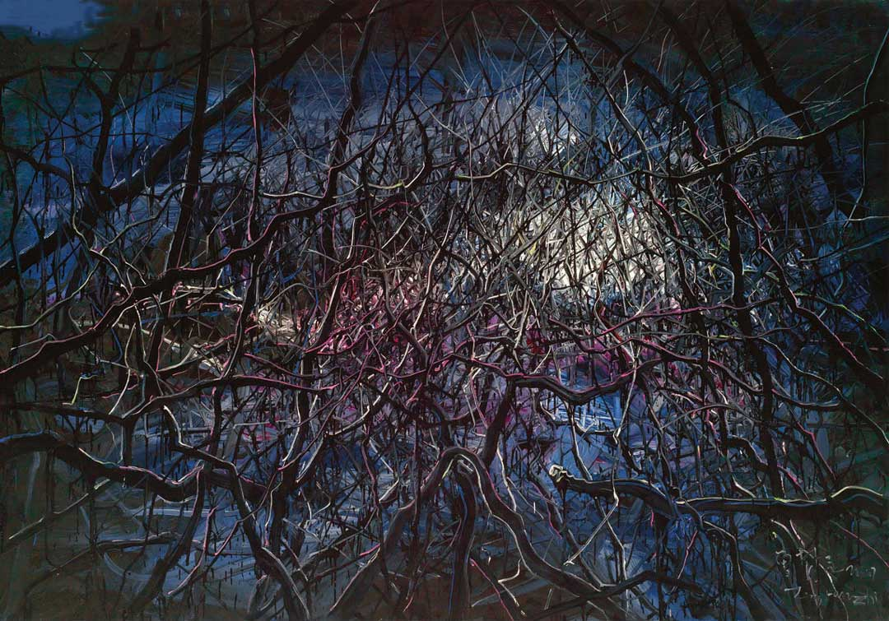
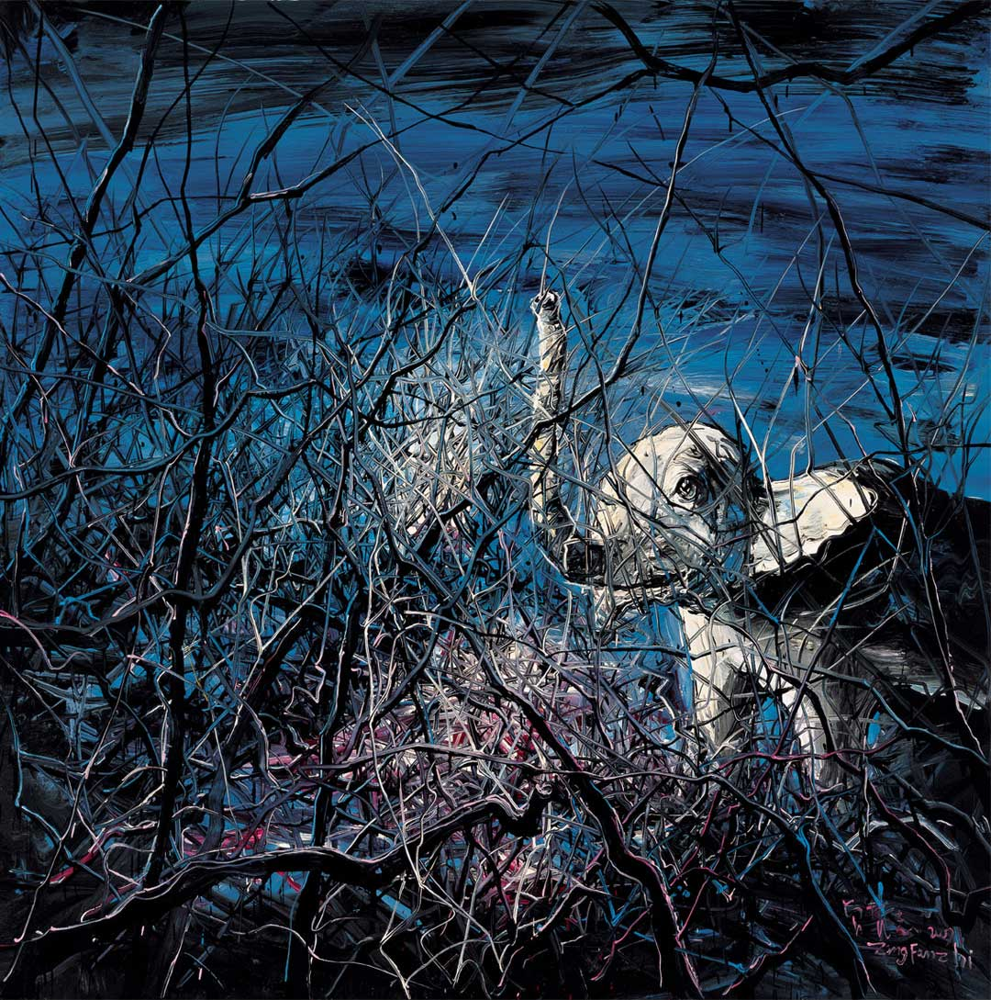
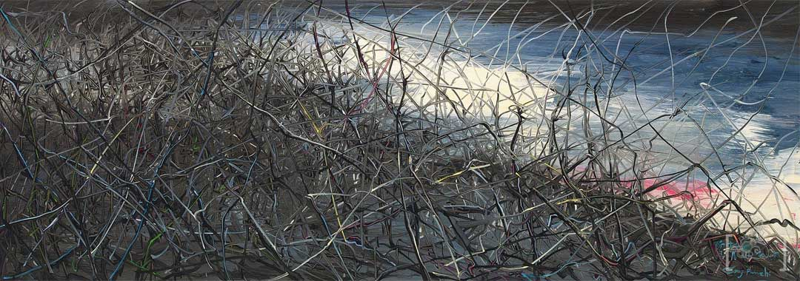
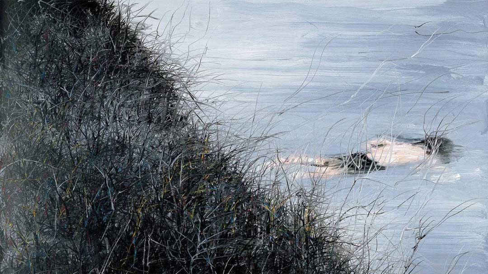

展览内容
展览内容
9月19日，中国当代艺术家曾梵志迄今为止规模最大、涵盖为广泛的展览《散步》将在尤伦斯当代艺术中心举行。
北京。9月19日，中国当代艺术家曾梵志迄今为止规模最大、涵盖为广泛的展览《散步》将在尤伦斯当代艺术中心举行。本次展览由UCCA馆长田飞宇与郭希联合策划，囊括以油彩、木材、金属、纸本等材料创作的60余件作品。反映了艺术家进30年的持续性创作概貌。

作者介绍
曾梵志，1964年出生于湖北武汉市，1991年毕业于湖北美术学院油画系。从20世纪90年代起，曾梵志的创作以其独特的语言风格和敏锐的社会批判，受到评论界广泛的赞誉，也得到社会民众广泛的持续关注。
作品展示



